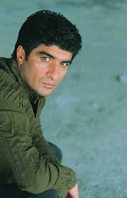

İbrahim Erkal
İbrahim Erkal (10 Mayıs 1966 – 11 Mayıs 2017), Türk arabesk ve pop müziğinin unutulmaz isimlerinden biridir. Sıcak ve samimi yorumlarıyla, aşk ve yaşam temalarını içtenlikle işleyerek geniş kitlelerin kalbinde özel bir yer edinmiştir. Aynı zamanda besteci, söz yazarı ve oyuncu olarak da kariyerini başarıyla sürdürmüştür.
Hayatı ve Kariyeri
İbrahim Erkal, 1966 yılında Erzurum’un Narman ilçesinde doğdu. Müzikle olan ilgisi küçük yaşlarda başladı. 1980’li yıllarda profesyonel olarak müzikle ilgilenmeye başladı ve kısa sürede sahne almaya başladı. 1990’lı yılların başında çıkardığı albümlerle geniş bir hayran kitlesi kazandı. İçten ve duygusal vokaliyle, özellikle Anadolu'nun çeşitli bölgelerinde büyük ilgi gördü.
Sanatçı, sadece müzikle kalmayıp, sinema ve televizyon dünyasında da başarılı çalışmalara imza attı. Oyunculuk alanında da kendini göstererek farklı yeteneklerini ortaya koydu.
Müzikal Tarzı ve Etkisi
İbrahim Erkal, arabesk ile pop müziği harmanlayarak özgün bir tarz geliştirdi. Şarkılarında genellikle aşkın, özlemin ve hayatın zorluklarının temalarını işlerken, dinleyicisine samimi bir dokunuş sundu. Sözlerinde çoğunlukla gerçekçi ve duygusal anlatımlara yer vererek, geniş bir dinleyici kitlesinin gönlünde taht kurdu.
Önemli Albümleri ve Şarkıları
- Gönlünüze Talibim (1993)
- Şanlı Türküm (1994)
- Yalan Mı (1996)
- De Get Yalan Dünya (1998)
- Sen Gittin Mi (2000)
Oyunculuk ve Diğer Çalışmaları
Erkal, müzik kariyerinin yanı sıra televizyon ve sinema sektöründe de yer aldı. "Benimle Oynar Mısın?" ve "Yıkılmadım" gibi filmlerle oyunculuk yeteneğini gösterdi. Aynı zamanda birçok televizyon programında konuk sanatçı olarak yer aldı.
Yaşamı ve Sağlık Sorunları
2017 yılında geçirdiği beyin kanaması sonrası yoğun bakımda tedavi gören İbrahim Erkal, ne yazık ki 11 Mayıs 2017 tarihinde hayata veda etti. Ölümü, müzik dünyasında ve sevenleri arasında derin bir üzüntü yarattı. Sanatçının eserleri ve müziği ise hala canlılığını koruyarak dinlenmeye devam ediyor.
Mirası ve Anısı
İbrahim Erkal, Türkiye’nin sevilen sanatçılarından biri olarak, özellikle duygusal şarkılarıyla nesiller boyu hatırlanacak. Şarkıları, hala milyonlarca kişi tarafından dinlenmekte ve sevgiyle anılmaktadır. Türk müziğine bıraktığı güçlü katkılarla, unutulmaz bir miras bırakmıştır.